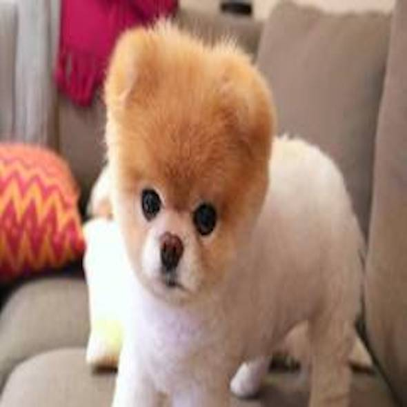
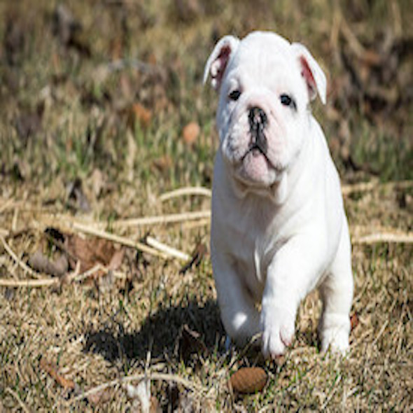

Nuevos Refugios
Debido a la gran cantidad de animales abandonados, en el último año ha aumentado la cantidad de refugios en la zona del AMBA
Record de Adopciones
Según la Asociación Argentina de Refugios de Animales, desde 2018 la cantidad de adopciones de animales abandonados ha aumentado un 26% en todo nuestro país

Nuevos Hospitales Veterinarios
El gobierno de la Ciudad de Buenos Aires ha confirmado la construcción de dos nuevos hospitales veterinarios municipales. Los mismos estarán terminados antes de Diciembre del 2022

Animales de Compañía
Según un estudio de la Universidad de West Union, las personas que viven con animales de compañía distrutan de un menor nivel de estress, son más propensas a socializar, duermen mejor y hacen más ejercicio físico